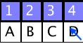
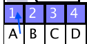
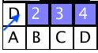

How the method works
The red button "Show Plot" displays English and matrix letter frequencies.
The "Clear matrix" red button shows the puzzle to be solved in its grid.
By repeating the steps below for all 26 letters, replacing the numbers
in the grid, then the resultant words solve the crossword...
Letter by letter....
To substitute D for 1,
first, click D 
then click 1

and it moves
another click on the new D will restore 1